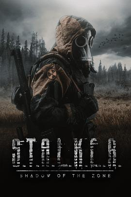

4.1
潜行者：禁区阴影
S.T.A.L.K.E.R. – Shadow of the Zone
2024
美国
评分 4.1
导演:
Stephen Hancock / Evan Muir
演员:
耐克·伊斯特 / Joshua Gray / Chris James Berberidis / James Choi / Carlos Alberto / Isaiah Nichols / Cory Haynes
类型:
动作,惊悚,科幻
剧情简介
切尔诺贝利事故后的数十年，禁区被再次封锁。辐射与未知能量共同孕育出一个名为“Zone”的超自然地带——时间错乱、重力扭曲、金属生锈的空气中闪烁着诡异电弧。自由潜行者阿列克谢（耐克·伊斯特 饰）受雇带领一支由前军人、科学家与雇佣兵组成的小队，前往Zone深处调查一个来自空中的神秘无线电信号。信号的内容是一段循环播放的求救信息——“我们发现了通道，请回应”。他们沿着废弃铁轨进入封闭区：空荡的村庄、坍塌的实验站、被藤蔓覆盖的军用卡车，静寂中暗藏危险。影片在摄影上大量使用手持与红外影像，营造出“纪录片式恐惧感”。队员们逐渐发现，Zone并非无人区，而是一处折叠空间——过去与现在、生命与死亡的界限都在不断交换。队伍成员一个接一个失踪，有人看见自己的“另一面”，有人听到死者的声音。阿列克谢在一次电磁暴中失去了导航设备，只能凭记忆前行。他与科学家艾琳（Rachel Harper 饰）发现信号源其实来自一座废弃的科研塔——那是前苏联为研究心灵能量而建的装置“黑曜引擎”。它不仅放大意识，还能复制灵魂。为了关闭信号，他们必须进入塔心，面对自己恐惧的投影。高潮部分，塔内的闪光与空间塌陷交织，镜头旋转成迷离的梦魇感：阿列克谢面对另一个自己——那个永远困在Zone里的“影子”。他明白，要想走出禁区，就必须摧毁自身的映像。最终爆炸吞噬整片区域，信号消失。影片以硬派科幻与心理惊悚相结合，致敬原作游戏《S.T.A.L.K.E.R.》系列的孤寂气质：风沙、残响、废墟与沉默的英雄。结尾镜头定格在阿列克谢留下的录音机——重复着一句话：“如果有人能听见……不要进Zone。”